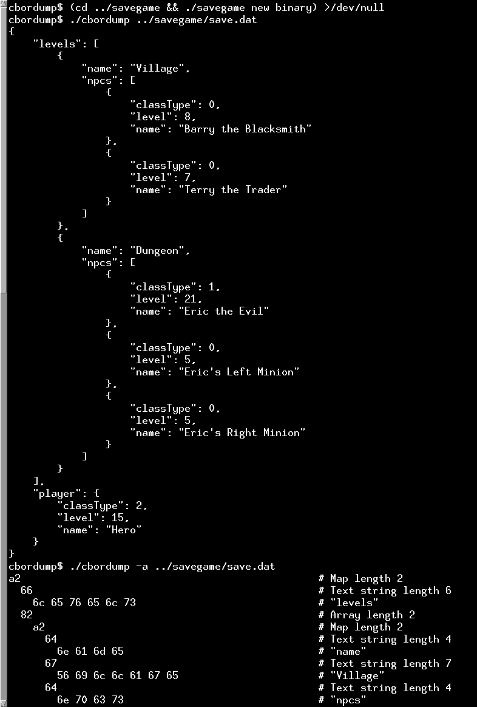

Parsing and displaying CBOR data
A demonstration of how to parse files in CBOR format.
This example shows how to use the QCborStreamReader class directly to parse CBOR content. The cbordump program reads content in CBOR format from files or standard input and dumps the decoded content to stdout in a human-readable format. It can output in CBOR diagnostic notation (which is similar to JSON), or it can produce a verbose output where each byte input is displayed with its encoding beside it.

The CborDumper Class
The CborDumper class contains a QCborStreamReader object that is initialized using the QFile object argument passed to the CborDumper constructor. Based on the arguments the dump function calls either dumpOne() or dumpOneDetailed() to dump the contents to standard output,
struct CborDumper { enum DumpOption { ShowCompact = 0x01, ShowWidthIndicators = 0x02, ShowAnnotated = 0x04 }; Q_DECLARE_FLAGS(DumpOptions, DumpOption) CborDumper(QFile *f, DumpOptions opts_); QCborError dump(); private: void dumpOne(int nestingLevel); void dumpOneDetailed(int nestingLevel); void printByteArray(const QByteArray &ba); void printWidthIndicator(quint64 value, char space = '\0'); void printStringWidthIndicator(quint64 value); QCborStreamReader reader; QByteArray data; QStack<quint8> byteArrayEncoding; qint64 offset = 0; DumpOptions opts; };
The dumpOne() Function
Switching on QCborStreamReader::type() enables printing appropriate to the type of the current value in the stream. If the type is an array or map, the value's content is iterated over, and for each entry the dumpOne() function is called recursively with a higher indentation argument. If the type is a tag, it is printed out and dumpOne() is called once without increasing the indentation argument.
The dumpOneDetailed() Function
This function dumps out both the incoming bytes and the decoded contents on the same line. It uses lambda functions to print out the bytes and decoded content, but otherwise has a similar structure as dumpOne().
CborTagDescription
The tagDescriptions table, describing the CBOR tags available, is automatically generated from an XML file available from the iana.org website. When dumpOneDetailed() reports a tag, it uses its description from this table.
See also QCborStreamReader and CBOR Support in Qt.